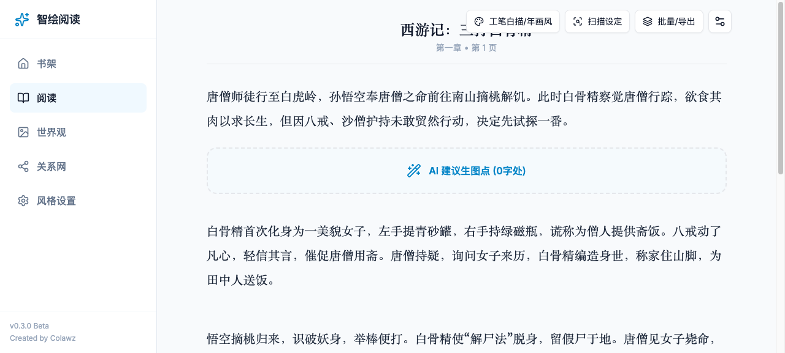
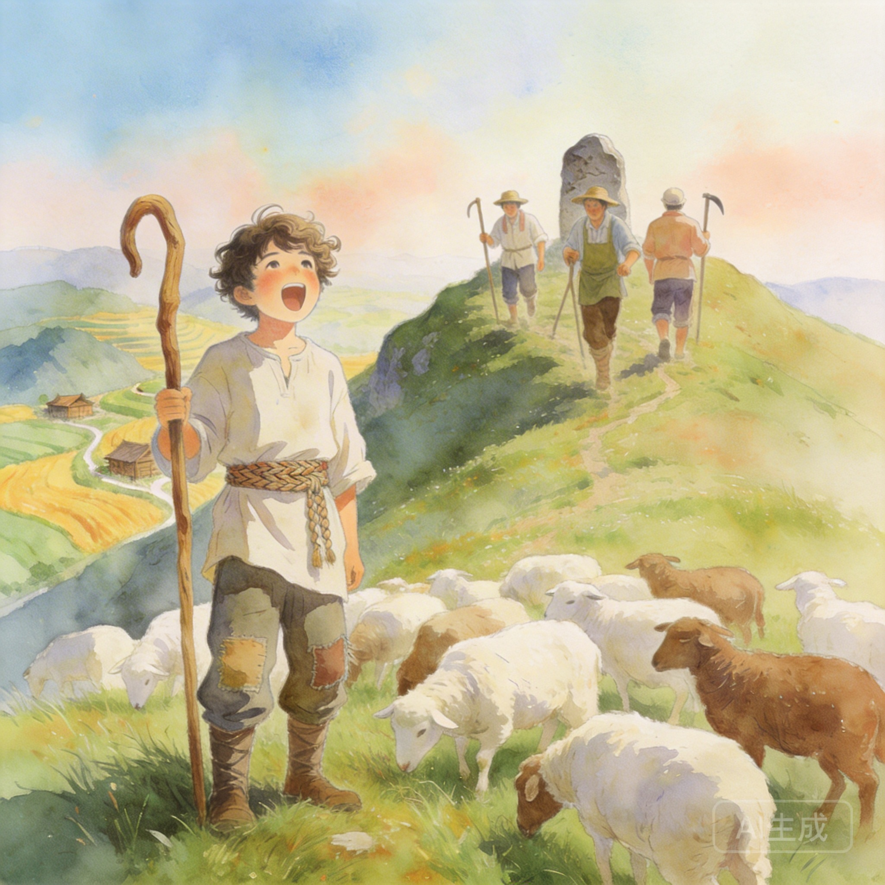
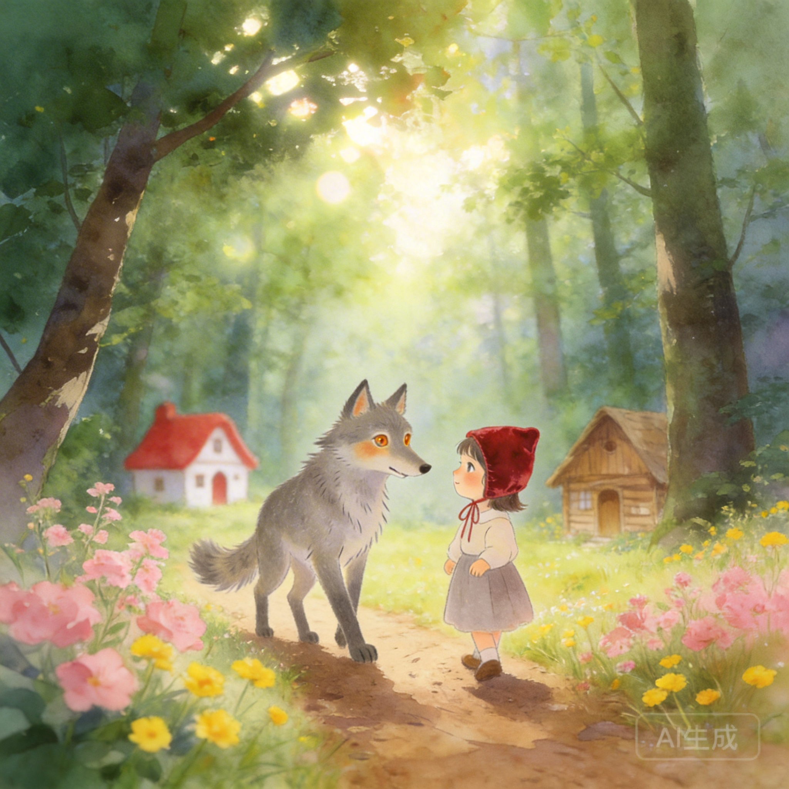

computer design competition · 2026
智绘阅读：
本地优先型 AI 阅读配图系统
把书架导入、阅读器生图、世界观资产库、关系理解、AI 伴读与本地图片归档整合为一套完整的阅读创作工作流。
项目汇报用于计算机设计大赛展示与答辩




part 05 · generation
段落生图：让阅读过程本身具备画面生产能力

小红帽
基于正文段落生成森林相遇场景，保留人物一致性。
狼来了
适合寓言类故事的段落式画面化呈现。
三打白骨精
复杂叙事题材也能在角色设定基础上连续出图。
交互能力
支持单段手动生图、本张附加要求、重生成与删除。
任务引擎
批量模式按顺序分批生成，每批最多并发 3 张，兼顾速度与状态稳定性。
part 10 · innovation
创新点总结：不是“会生图”，而是“会把阅读组织成产品流程”
01把阅读器、世界观、关系页、AI 对话打通为一条连续工作流产品整合
02让角色和地点成为可复用资产，而不是单次生图中间结果资产沉淀
03让角色对话遵守阅读边界，减少剧透并增强叙事合理性交互设计
04采用 IndexedDB + pic_db 的本地优先双持久化架构工程实现
这个项目最核心的创新，是让阅读、生成、理解和保存形成闭环，使阅读产品从“内容消费工具”进化成“阅读创作工作台”。
谢谢各位老师，欢迎提问。